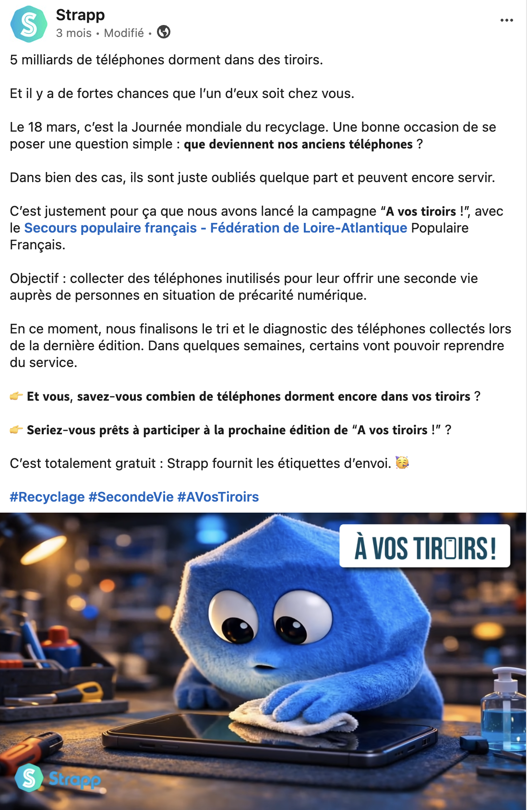
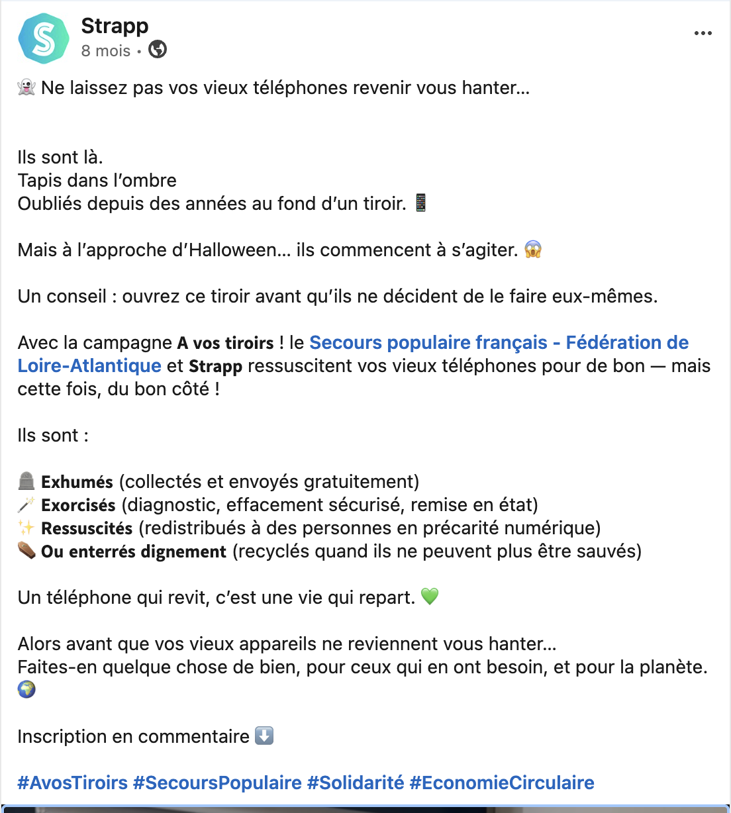

Programme de collecte solidaire lancée par Strapp en partenariat avec le Secours Populaire Français : collecter les smartphones professionnels dormants pour les redistribuer aux personnes en situation de fracture numérique, ou les recycler de façon certifiée.
Voir la landing page ↗252
téléphones collectés
105
appareils redistribués
147
téléphones recyclés
5 Mds
smartphones dans les tiroirs mondiaux
Kit de communication · Entreprises partenaires
Un kit complet remis à chaque entreprise participante : supports print et digital, template de mail interne pour mobiliser les collaborateurs, et modèle de post LinkedIn pour valoriser leur engagement.
Voir le kit de communication ↗Comment ça marche · 6 étapes
01 · Inscription
L'entreprise s'inscrit via la landing page et signale qu'elle dispose de smartphones de flotte inutilisés.
02 · Inventaire
Strapp guide l'entreprise pour identifier et comptabiliser les téléphones dormants dans sa flotte professionnelle.
03 · Confirmation
L'entreprise confirme le nombre d'appareils. Strapp prend en charge toute la logistique de collecte.
04 · Expédition
Strapp envoie une étiquette d'expédition prépayée. L'entreprise n'a qu'à emballer et déposer le colis.
05 · Diagnostic
Les appareils sont diagnostiqués par les experts Strapp : fonctionnels, reconditionnable ou recyclage certifié DEEE.
06 · Impact
Les téléphones sont donnés au Secours Populaire ou recyclés proprement. L'entreprise reçoit un rapport d'impact RSE.
Bénéfices RSE pour les entreprises partenaires
Engagement solidaire concret
Les appareils fonctionnels sont redistribués à des personnes en fracture numérique via le Secours Populaire Français, en Loire-Atlantique et au-delà.
Empreinte écologique réduite
Chaque smartphone produit génère 80 kg de CO² (ADEME). Prolonger la durée de vie d'un appareil, c'est éviter cette empreinte.
Rapport d'impact fourni
Chaque partenaire reçoit un rapport documenté pour ses bilans RSE, sa communication interne et ses reportings extra-financiers.
Publication LinkedIn · Strapp


Contexte
Initiative RSE lancée par Strapp · Partenariat Secours Populaire Français · Campagne initialement ancrée sur la Semaine Européenne du Développement Durable · Programme continu depuis le REX de mars 2026 · Nantes
Mon rôle
Conception et pilotage du programme · concept et mécanique · identité visuelle et positionnement · kits de communication · publications LinkedIn · campagnes mail · Secours Populaire Français : partenaire pour la redistribution
Résultats
252 téléphones collectés · 105 redistribués au Secours Populaire · 147 recyclés · 2 000 personnes aidées à Nantes · programme actif
D'autres projets à explorer
Retour au portfolio pour voir l'ensemble des réalisations.
Voir tous les projets →